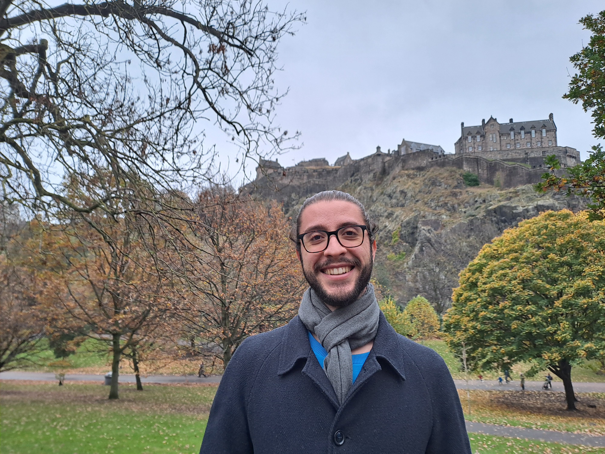

Edoardo Giovanni Tolotti
Ph.D. Student in Mathematics
Dipartimento di Matematica F. Casorati, Università di Pavia, Via Ferrata 5, 27100, PV, Italy
I am currently a Ph.D. student at the Dipartimento di Matematica F. Casorati of Università di Pavia, under the supervision of Professor Maria Giovanna Mora. My main research interests lie in the field of the Calculus of Variations. Some of my recent works regard Γ-convergence problems related to dimension reduction models for ribbons and plates, shape optimization problems for anisotropic Riesz-type energies, and optimal dislocations arrangement.
To contact me, write to edoardogiovann.tolotti01@universitadipavia.it
